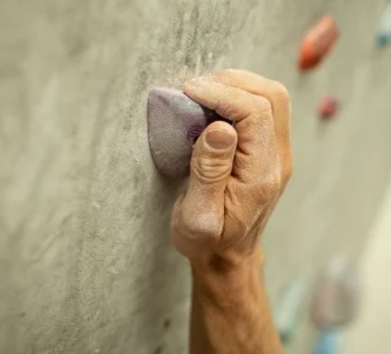

Your first time:
When climbing for the first time, people often become confused and overwhelmed, unable to figure out what to do.
- Shoes
- Bouldering shoes are provided by the gym, with an option to bring your own. These shoes should be tight but not painfully so.
- Chalk
- In most gyms, there will be a community chalk supply. Squirt onto your hands and return the bottle to where you got it so that other people can use it.
- Bags
- Most gyms will have boxes or containers where you can put your gear. Please do not leave this on the floor, as it creates a hazard for other boulderers.
